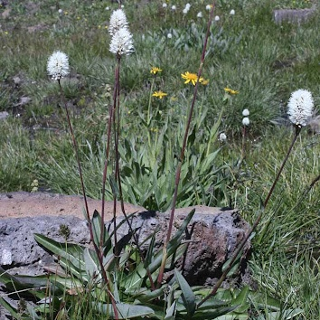

Bistorta bistortoides
Common name
American Bistort
Family
Polygonaceae
Family common name
buckwheat family
Blooms
May - September
Habitat
Wet meadows, edges of streams, sub-alpine slopes at high-elevations.
Range Map